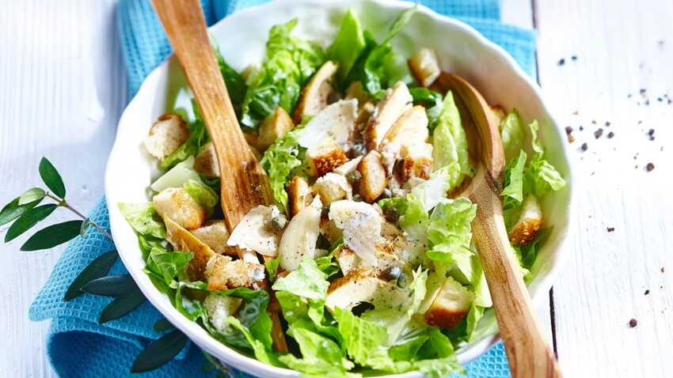

Salade César

Description
La salade César est une recette de cuisine de salade composée de la cuisine américaine, traditionnellement préparée en salle à côté de la table, à base de laitue romaine, œuf dur, croûtons, parmesan et de sauce César à base de parmesan râpé, huile d'olive, pâte d'anchois, ail, vinaigre de vin, moutarde, jaune d'œuf et sauce Worcestershire.
C'est un de mes plats préférés ! Ce dernier peut également faire office d'entrée. Il suffira d'ajuster les quantités.
Ingrédients
- 4 escalopes de poulet ou mieux au volailler de les recouper en aiguillettes ou encore des restes d’un poulet rôti
- 1 salade variété romaine
- 2 gousses d’ail
- 1/2 baguette un peu sèche (ou 4 tranches de pain de son choix) pour les croûtons
- 1 morceau de Parmesan environ 100 g (1/2 cup de lamelles)
- 3 cuillerées à soupe de jus de citron
- 4 anchois à l’huile d’olive (ou 2 cuillerées à café de Sauce Worcestershire)
- 1 jaune d'œuf
- 1 cuillerée à soupe de moutarde de Dijon
- 80 ml d'huile d’olive environ (1/2 cup)
- Sel
- Poivre
Préparation
- Préchauffer le four à 210°.
- Préparer les croûtons à l'ail:
- Couper le pain en croûtons et les faire dorer au four dans le plat avec un filet d’huile d’olive et 1 gousse d’ail écrasée pendant 5 mn.
- Brasser le tout.
- Remettre le plat au four 5 mn pour les faire bien dorer.
- Faire griller le poulet puis le couper en lanières.
- Laver et essorer la salade.
- Râper le parmesan en lamelles.
- Préparer la sauce :
- Dans le bol d’un blender : verser le jaune d'œuf, la 2ème gousse d’ail écrasée, le jus de citron, les anchois, la moutarde.
- Mixer le tout.
- Ajouter l’huile d’olive en filet jusqu’à obtenir la consistance d’une crème.
- Ajouter sel et poivre si besoin.
- Dans un saladier, ou des assiettes creuses, disposer la salade coupée en larges lanières au fond, le poulet, les croûtons tièdes, les lamelles de parmesan et servir avec la sauce à part.
- Déguster !